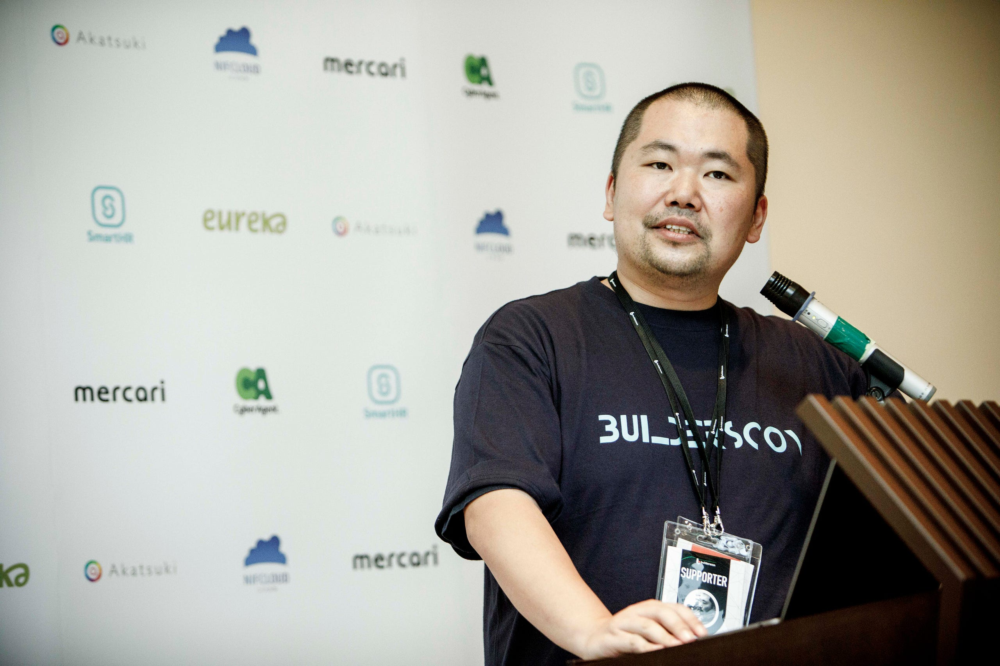
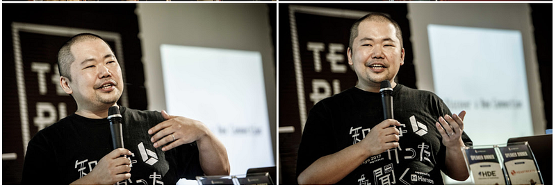
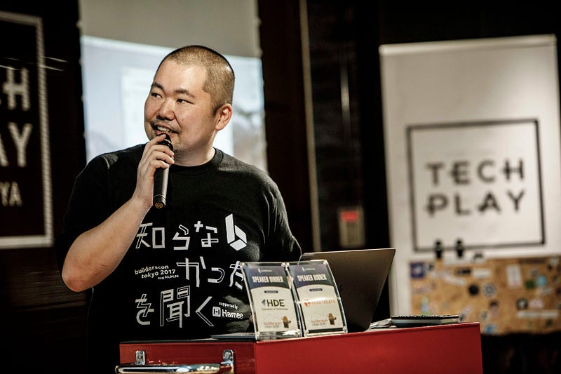
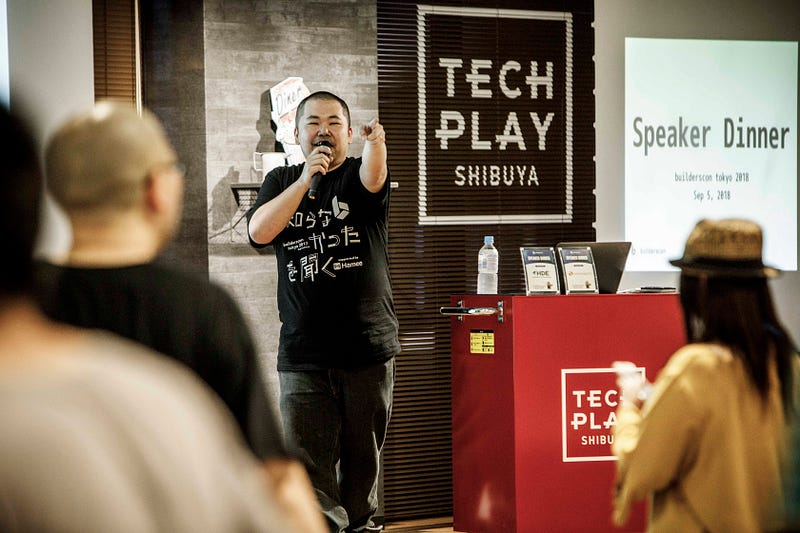

カンファレンススピーカーTips〜カメラマンがいる場合に気をつけること4つ〜
カンファレンススピーカーTips〜カメラマンがいる場合に気をつけること4つ〜

2009年くらいから自分は「コミュニティカンファレンスにこそプロのカメラマンが必要だ」と思い、毎年プロの方に会場写真を発注しています。
先日開催されたbuilderscon tokyo 2018でももちろんそのようにしましたが、カンファレンスで登壇する側の皆様、カメラマンさんを意識していますか？
Sep 6 (Thu) Sep 7 (Fri) Sep 8 (Sat) @Kyoseikan, Keio University In association with Keio University Graduate School of…builderscon.io
もちろん、皆様はスピーカーなので登壇する時は話す事に集中していただいて問題はありません。
しかしその余裕があるなら写真に撮られた時の見映えとバリエーションも気にしましょう。これはカンファレンスのためだけではなく、後々自分のプロフィール写真をそこから選ぶような場合においても、選択肢が増えるのでお勧めです。
（なおこの記事で自分の写真ばかりなのは自分が大好きなせいでも自分はちゃんと全部できてますよ、ということではなく、そのほうが誰にも許可を取らずにこの記事を書けるからです！）
カメラマンに視線をあげる
通常はスライドと観客、ないし手元のPCを皆さんは見ていると思います。しかし、カメラマンの存在に気づいたその時、その一瞬、彼らのほうを向いてあげて下さい。
別に凝視する必要もありません。カメラ目線である必要もありません。とにかく顔をそっちの方向に向けましょう。そして10数える間くらいキープ。こうしないと絶対に正面の顔を撮ってもらえません。

この場面は自分でちゃんと意識していたので覚えています。
自分の右手にカメラマンさんが来たので「それっぽい」ポーズをとりつつ、何回かそちらに顔と体を向けました。左側の写真がその一瞬前、右側が少しだけ向きを変えたあとです。右側の写真の左手は完全に意識してますね。
正面向きの写真はもしプロフィール等に使うのであればわりと使いやすいので、おすすめです。
一箇所を見続けない

登壇される皆さまの中には「PCモニターを凝視し続ける」「ディスプレイを見続けながら話す」という方も意外と多く見受けられます。
これは写真映りの点でも問題なのですが、セッションを聞きに来た観客のほうに全く向いていない、という点でもさらに問題です。
登壇者が観客とアイコンタクトを取る必要はまったくないのですが、「私はあなたたちに何かを伝えようとしている」という事実をボディランゲージとして表現するにはとにかく観客の側に顔をちゃんとあげる事が重要です。
そして何もずっと観客を見続ける必要はありません。PCを見てもディスプレイを見てもよいのです。ですがそこを見続けてはいけません。
カメラマンが写真を撮りに来てもずっとあごをあげている顔か、ずっとうつむいている写真しか撮れなくなってしまいます。これだと一般的に見映えもよくないですし、プロフィール写真に使うような事もできませんね。
セッション中は是非様々な方向に顔と体を向けてみるようにしてください。
少し動く

これも似たような事なのですが、壇上にいるときは少しでいいので動きましょう。
歩いてもいいですが、別にそこまでする必要すらありません。
まずは体の向きをしっかり変えてみましょう。右側の観客に話すつもりで右を向き、左側の観客に話すつもりで左を向きましょう。これだけで撮ってもらえる写真の幅がぐっと広がります。
また、手を挙げる、ジェスチャーをする、というだけでも大分よいです。
歩ける人は歩くと良いでしょう。何人か明らかに壇上で動いて（しかも上手に動いて）話せる人がいますので、そういう方も参考にすると良いかも知れません。
カメラマンの仕事を理解してあげよう
この記事に書いたことは結局「カメラマンの仕事の特性」を上手に使うためのアドバイスです。
カンファレンスカメラマンは通常ひとつの部屋に張り付いているわけではありません。あ、もちろんお金をたくさん持ってるカンファレンスでは部屋ごとにカメラマンを雇う事もできると思いますが…
カメラマンの方はこっちの部屋でパシャリとしたあと、次の部屋に行きまたパシャリ、そして次へ…というのを繰り返しています。
複数のトラック（今回のbuildersconでは5トラック）で60分のセッションが執り行われているのであれば、だいたい3〜50分をかけて、それらをまわって写真をとってくれます。つまり各部屋での持ち時間は約10分弱。
その時間制限の中でスピーカーの写真を撮ってもらうわけですので、今回の記事に書いたような事は前持って分かっていないとカメラマンのいるタイミングでそれぞれを行う事はできません。ですので、前持って意識しているとよいです。
今回のこの記事を読んでいただけた方は是非次回登壇の時には「撮られやすい」感じで登壇してみてください！